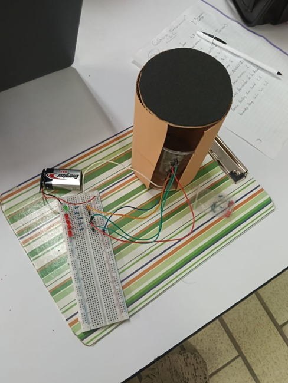
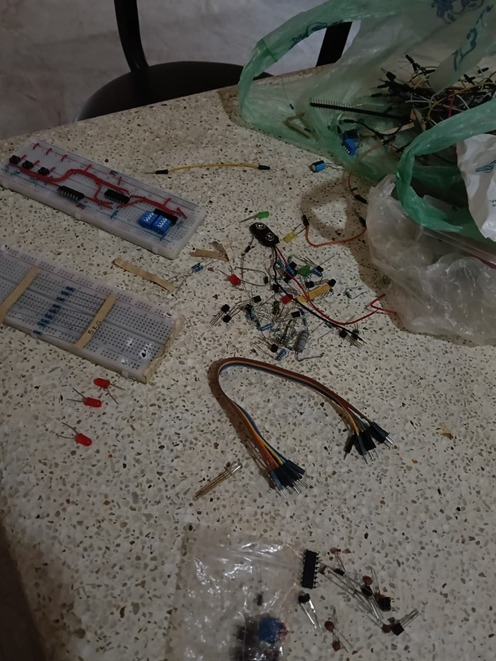
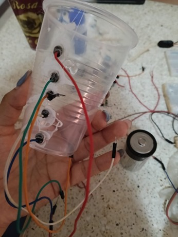
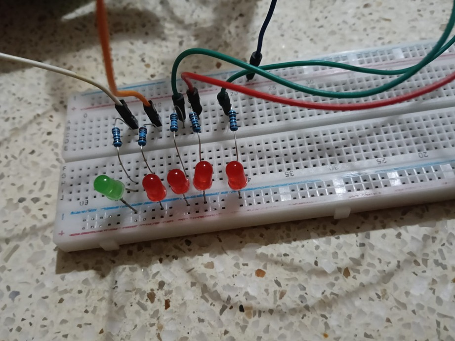
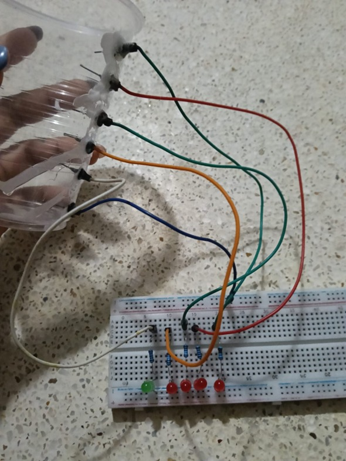

SENSOR DE AGUA

Proyecto basado en un sistema conductivo capaz de detectar visualmente el nivel del agua utilizando LEDs, resistencias y principios básicos de electrónica.
Ver Proyecto
Funcionan como indicadores visuales para representar los niveles de agua.
Limitan la corriente eléctrica y protegen los componentes electrónicos.
Se utilizan como sondas sensoras y conexiones dentro del protoboard.
Fuente principal de alimentación del circuito electrónico.
Se fijan los cables macho a distintas alturas dentro del vaso. El cable común debe estar siempre en el punto más bajo.
Se conecta cada cable de nivel a una resistencia, y esta al ánodo (pata larga) de un LED.
Todos los cátodos (patas cortas) de los LEDs se conectan al polo negativo (GND) de la fuente de poder.
El proyecto aplica la Ley de Ohm para controlar el flujo de corriente eléctrica.
V = I / R




Este dispositivo demuestra que el agua puede integrarse como un componente activo en un sistema electrónico.
Además de ser útil para depósitos domésticos o industriales, sirve como modelo educativo para entender la conductividad y el control de magnitudes eléctricas fundamentales.